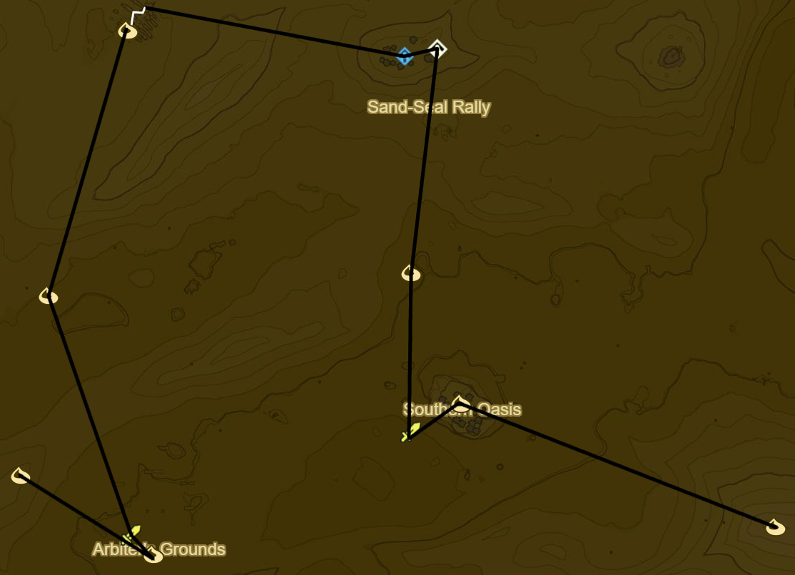

Wasteland 2
Korok 566: Magnesis Puzzle to W
Korok 567: Balloon between statue wrists to S
Shrine Quest: The Seven Heroines
Korsh O'hu Shrine (88/120)
Clockwise starting from 9 o' clock
Red Apostrophe
Orange ^ Symbol
Yellow O
Grey :
Green Scroll
Blue Flame
Purple Lines(already done)
Korok 568: Rock atop S-most statue
Korok 569: Flower trail across bones to W
Korok 570: Magnesis Puzzle to SE
Korok 571: Magnesis Puzzle inside Skull to SE
Korok 572: Magnesis Puzzle to E
Korok 573: Rock pattern to E
Korok 574: Rock behind cracked boulders to NE
Shrine Quest: The Desert Labyrinth to SW
Dila Maag Shrine (89/120)
Korok 575: Rock atop pillar to NW
Korok 576: Magnesis Puzzle to N
Korok 577: Race to SW
Korok 578: Race on arch to NW
Korok 579: Rock atop pillar to SW
Shrine Quest: The Perfect Drink to NW
Korok 580: Rock Circle to W
Korok 581: Cacti to W

Korok 582: Balloon atop tree to NW
Molduga (1/4)
Korok 583: Rock to N
Korok 584: Flower trail on skeleton to NW
Korok 585: Rock to SW
Molduga to SE (2/4)
Korok 586: Rock to SE
Korok 587: Cacti to NW
Hawa Koth Shrine to W (90/120)
Take Picture of Gerudo Great Skeleton
Great Fairy Fountain
Korok 588: Fairylights atop Skeleton
Molduga to NE (3/4)
Korok 589: Cacti to W
Molduga to NE (4/4)
Tho Kayu Shrine (91/120)
Light area's 4 torches
Korok 590: Cacti to NW
Korok 591: Fairylights atop skeleton to NE
Korok 592: Fairylights atop skeleton to N
Kema Zoos Shrine (92/120)
Shrine Quest: The Silent Swordswomen
Korok 593: Fairylights near pinwheel atop skeleton to SE
Korok 594: Race to SE
Korok 595: Cacti to SE
Side Quest: Medicinal Molduga
Molduga Guts
Shrine Quest: The Perfect Drink
Get Ice
Main Quest: Divine Beast Vah Naboris
Recovered Memory 6 - Urbosa's Hand (14/18)
Korok 596: Flower trail to E of Gerudo Town and N of Lookout Tower
Complete Main Quest: Divine Beast Vah Naboris
Side Quest: The Thunder Helm
Side Quest: The Mystery Polluter
10 Wildberries
Side Quest: The Search for Barta
Warp to Hawa Koth Shrine
Hearty Durian
Shrine Quest: The Undefeated Champ to S outside Gerudo Town
Raqa Zunzo Shrine (93/120)
Warp to Shrine of Resurrection
Next: [Great Plateau 1](17 - Plateau2.md)